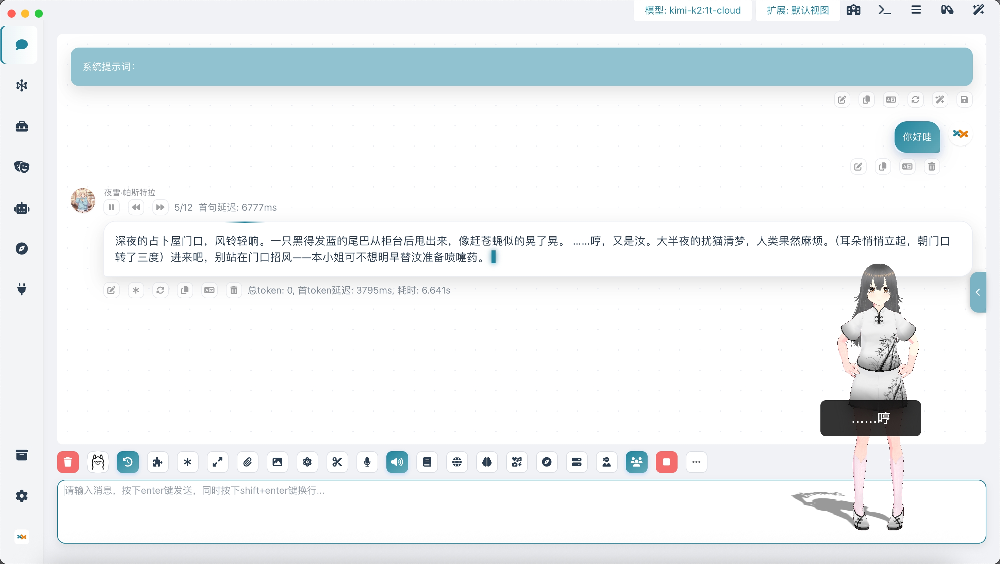

>> 核心特性
全渠道部署
一键部署至桌面、QQ、飞书、Discord、Telegram 等多类终端。
生态工具集成
自由接入 Home Assistant, MCP, Dify 等标准化工作流与工具链。
无缝能力增强
内置联网搜索、永久记忆、RAG 知识库与视觉分析，无需代码改造。
扩展市场
丰富的社区插件市场，自由分享与下载各类智能体扩展功能。
开放标准接口
兼容 OpenAI API、MCP 协议，支持 VRM/VMC 协议驱动 3D 形象。
全平台适配
完美支持 Windows、macOS、Linux 原生运行及 Docker 部署。
ROOT ACCESS GRANTED
系统能力概览
模型服务支持
深度支持 OpenAI, Ollama, Dify 以及各类多模态大模型融合。
VRM 虚拟形象
支持 3D 形象交互、双向 VMC 协议，适用于虚拟主播推流。
社群机器人
支持 QQ、飞书、Telegram、Discord 及直播平台弹幕交互。
智能播报
支持长文本/ePub TTS 播报，集成多种数字人音色。
进阶 UI 工具
支持 Mermaid 图表、HTML 渲染及沙盒代码执行环境。
角色扮演与记忆
支持酒馆角色卡、异色语音、基于向量库的长期记忆系统。
开发者友好
开放模拟 OpenAI 接口与 MCP 协议，完善的插件开发 SDK。
隐私与存储
所有数据本地化存储，支持 NAS 部署作为私有云存储。